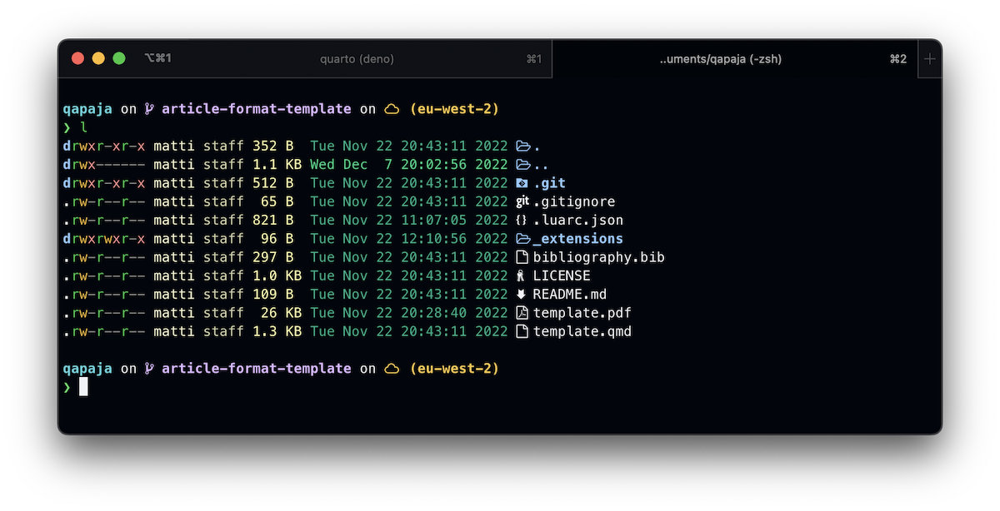

![]()
Like many people in academia, I spend much of my working time in front of computers. It’s then important to me that everything is just the way I want it, software is easily available and updated, and that my terminal looks nice 🧙.
This blog post is an adaptation of a document that I’ve saved for myself in the eventual case that I have to wipe my computer and reinstall everything, or if I get a new computer. I use Macs, but some of these things also work on Linux. Nothing here will work for Windows machines.
MacOS setup
This aims to be succinct and quick, using homebrew to install as much as possible from the command line.
Software
Fire up the terminal and install homebrew. The command is currently
/bin/bash -c "$(curl -fsSL https://raw.githubusercontent.com/Homebrew/install/HEAD/install.sh)"but I would check the website before running that. Then install some stuff. First the GUI stuff that I use:
# GUI apps
brew install --cask \
firefox iterm2 microsoft-office \
zotero obsidian todoist sublime-text \
mactex rectangle alfred slack zoom \
visual-studio-code docker monitorcontrolThen the terminal and command line things that I like to use:
# Terminal and CLI things
brew install \
tailscale starship bat \
btop lsd dua syncthingAnd then a bunch of fonts. There’s probably more now but I’ve forgotten. The more the merrier 😄.
brew tap homebrew/cask-fonts
brew install svn
brew install --cask \
font-fantasque-sans-mono font-fantasque-sans-mono-nerd-font \
font-noto-sans font-noto-serif font-noto-mono font-noto-mono-for-powerline \
font-noto-emoji font-hasklug-nerd-font font-anonymice-nerd-font \
font-meslo-lg-nerd-font font-fira-code font-fira-mono font-fira-sans \
font-fira-sans-condensed font-pt-mono font-pt-sans font-pt-sans-narrow \
font-pt-serif font-pt-sans-caption font-pt-serif-captionTerminal
I then set up my terminal environment. I use iTerm2 and the Starship prompt. I also pick up some nice iTerm2 color themes from https://iterm2colorschemes.com/.
Now I can open up VS Code in the current working directory with code ., or get nice outputs when listing working directory contents (I’ve aliased l to lsd -la in ~/.zshrc):

R
Then onto the serious stuff 💎
I install R from CRAN because I (sometimes) want to use specific versions. Also I need to remember to get the appropriate M1 version more often 😄.
RStudio: I use the daily development version of RStudio. I don’t install this with homebrew because it sometimes has issues with using the right R version.
I also used to make sure that I’m using the faster Apple provided BLAS (20x faster for some operations). I can’t remember if I’ve done that this time though and am now afraid to check.
I then immediately open RStudio and install my “base” packages that I use all the time.
install.packages("pak")
pak::pkg_install(
c(
"usethis", "tidyverse", "brms",
"kableExtra", "janitor", "here",
"scales", "gtsummary", "multidplyr",
"ggtext", "parameters", "tidybayes",
"ggstance", "ggdist", "patchwork",
"ggforce", "ggh4x", "lavaan",
"emmeans", "ggstance", "renv",
"furrr", "remotes", "kableExtra",
"gt"
)
)Utilities
I use Amphetamine to make sure my computer never sleeps (unless I tell it to.) Amphetamine is not available on homebrew.
Zotero
I love Zotero, and it has some stellar plugins:
- Install the Zotero SciHub add-on so I can access papers https://github.com/ethanwillis/zotero-scihub
- Better BibTex https://retorque.re/zotero-better-bibtex/installation/
- This will automatically help manage bibtex keys
- Possible to live-update a .bib file for e.g. syncing to somewhere
- Zutilo https://github.com/wshanks/Zutilo, but I can’t now remember what it even does
- ZotFile
- Point Zotero to my pdfs on ~/Sync/ZoteroPDF (Syncthing directory)
- check change to lower case, replace blanks, max length 60 in zotfile settings
- Use https://github.com/retorquere/zotero-storage-scanner to e.g. get rid of broken attachments
General Things
I then turn on Dock hiding in Mac settings. Have I told you that the Ventura update totally destroyed the Settings menu, and I am now seriously considering switching to Linux? Well I did now. I also rename the computer to something dumb in System settings > Sharing > Computer Name.
Dotfiles and configuration files
I also have a git repo with some dotfiles and configurations I use, but it’s currently private. It mainly creates some terminal aliases and theme options, and git global configurations. I just backup existing files and copy from the repo to wherever they need to be, but there are more complicated workflows too.
Conclusion
After this I usually have a pretty useful computer. Because of homebrew its quite fast too.
Credits
Reuse
Citation
@online{vuorre2022,
author = {Vuorre, Matti},
title = {How {I} Like to Set up My Computer},
date = {2022-12-08},
url = {https://vuorre.netlify.app/posts/computer-setup-dotfiles},
langid = {en}
}